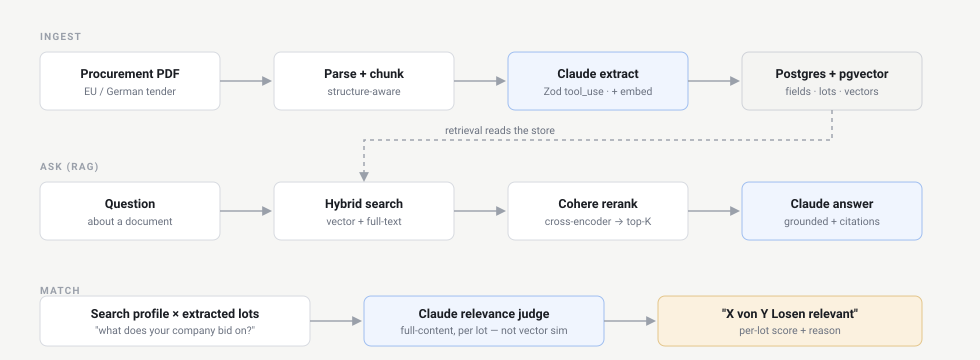
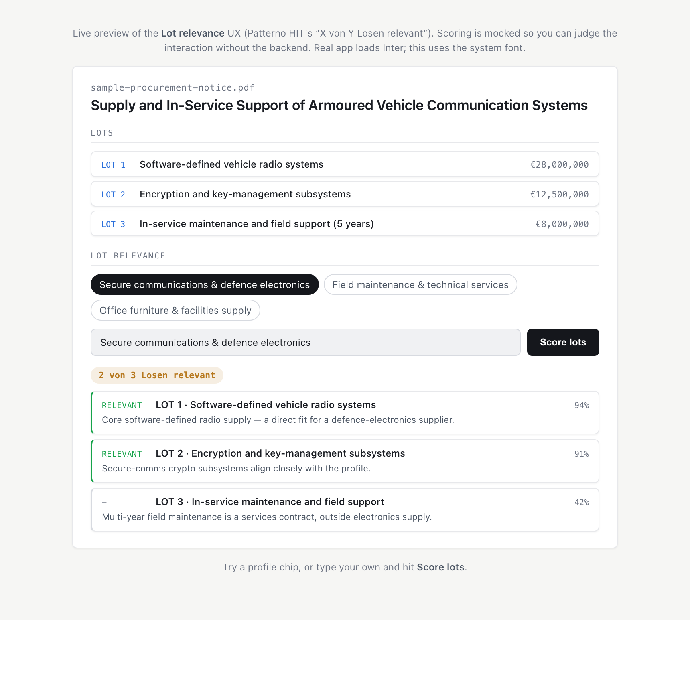

Patterno turns EU & German procurement tenders into structured, searchable intelligence — and scores every lot against your profile. This is a working demo built on the production stack: TanStack Start · PostgreSQL/pgvector · Claude. The approach to accuracy is architectural, not prompt-tuning.
Official procurement documents are long, structured, multilingual, and split into lots. General-purpose extraction gets to ~80% — close enough to look right, wrong often enough to miss a deadline or a qualifying criterion. Closing that last gap is an engineering problem, solved with retrieval and evaluation, not cleverer prompts.

PDF → structure-aware chunking → Claude tool-use extraction (one Zod schema is the source of truth) + OpenAI embeddings → Postgres/pgvector.
Hybrid search (vector + Postgres full-text) → Cohere cross-encoder rerank → a grounded Claude answer with source citations.
Each lot judged on its full content against a search profile — not vector similarity — producing the relevance metric below.
A buyer's profile and a tender lot can share vocabulary without being a real fit. So relevance is an LLM judge over the full lot content — assessing genuine fit, with a score and a one-line reason per lot — rather than an embedding-similarity guess. The same philosophy Patterno's HIT product is built on.
